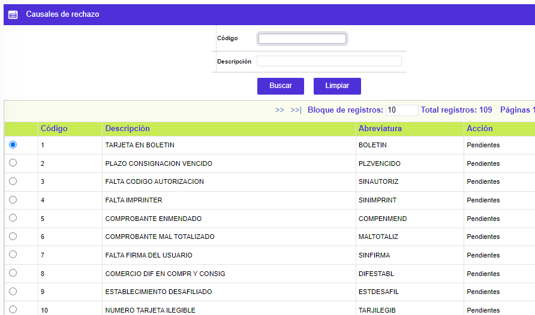
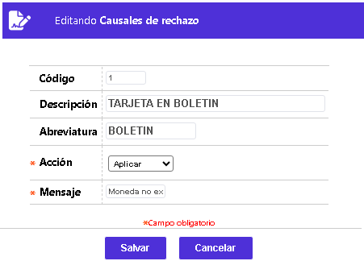

Causales de rechazo
A través de esta opción se permite la consulta de la tabla que contiene la codificación de las distintas causales de rechazo de transacciones argumentadas o utilizadas por los procesos de validación. La entidad sólo puede modificar, según su propio criterio, la Acción o destino de la transacción que puede ser Fraudes, Pendiente, o Aplicar. Entre muchas otras posibilidades la entidad puede por ejemplo, para la causal de rechazo de pago en cheque, definir que la acción debe ser Aplicar, lo que conlleva a que todos los pagos efectuados en cheque apliquen como si fuesen en efectivo. El formulario cuenta con una opción de Filtro de Búsqueda por Código y Descripción.

El formulario solo contiene la opción Actualizar y se muestra únicamente para aquellas causales a las cuales se les definió que Si permiten cambio de acción.
Actualizar: si el usuario invoca la opción Actualizar se despliega un nuevo formulario en el cual el único campo modificable es Acción.

Descripción de campos
Acción |
Campo tipo combo en el cual se puede seleccionar el destino de la transacción de acuerdo con la causal, que puede ser Fraudes, Pendiente o Aplicar, siempre y cuando al momento de definir la respectiva causal de rechazo, en el campo Cambio se haya seleccionado la opción Si para la misma; en caso contrario el sistema no permitirá efectuar ninguna modificación al contenido actual del campo y desplegará un mensaje de notificación al usuario. |